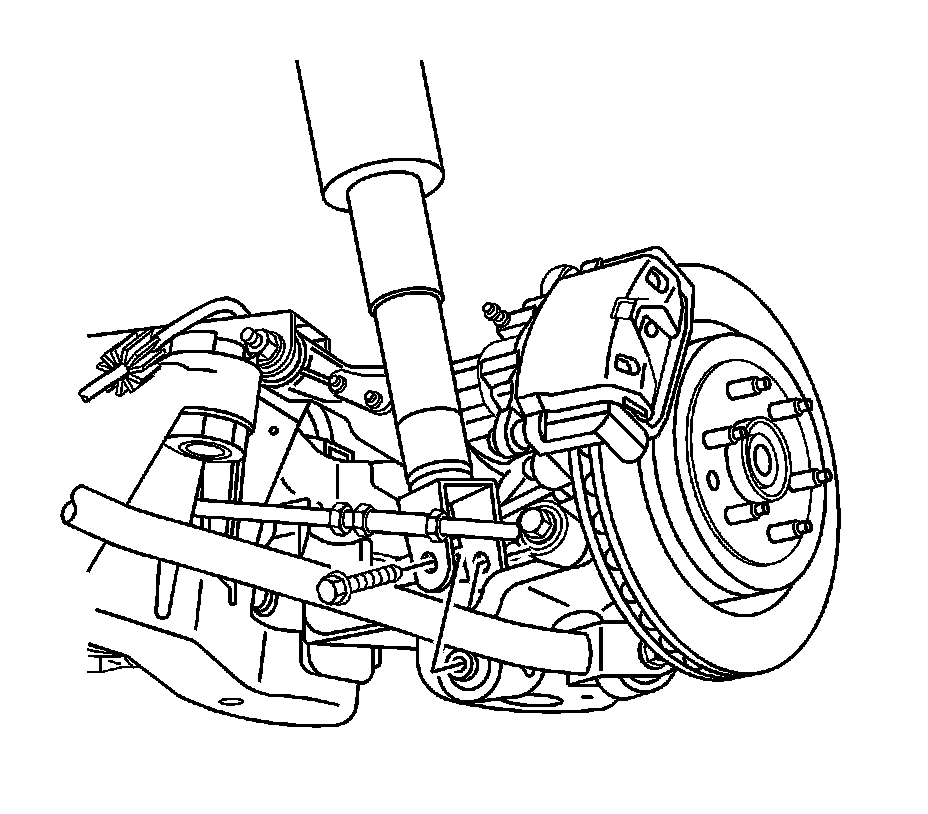

Coil Spring Replacement
Coil Spring Replacement
Removal Procedure
1. Raise and support the vehicle. Refer to Lifting and Jacking the Vehicle (Service and Repair) .
2. Remove the tire and wheel. Refer to Tire and Wheel Removal and Installation (Service and Repair) .
3. Disconnect the automatic level control sensor link from the upper control arm.

4. Disconnect the head lamp adjustment link from the upper control arm.
5. Support and raise the lower control arm using a suitable jack.
6. Remove the shock absorber lower mounting bolt.
7. Lower the lower control arm and remove the support.
8. Support the rear frame with a suitable jack.
Important: Remove the frame bolts from the side that the coil spring is being replaced on.

9. Remove the frame to body side mounting bolts and washers.
Important: Lower the frame far enough to remove the coil spring without going past the guide pins.
10. Lower the side of the frame.
11. Remove the coil spring from the vehicle.
Installation Procedure
1. Install the coil spring to the vehicle.
2. Raise the frame.
Notice: Refer to Fastener Notice (Fastener Notice) .
3. Install the frame to body mounting bolts and washers.
* Tighten the front bolts to 265 N.m (195 lb ft).
* Tighten the rear bolts to 191 N.m (140 lb ft).
4. Remove the jack from the vehicle.
5. Install a suitable jack under the lower control arm.
6. Using the jack raise the lower control arm until the shock absorber aligns with the knuckle.
7. Install the shock absorber lower retaining bolt.
Tighten the bolt to 150 N.m (111 lb ft).
8. Remove the jack from the vehicle.
9. Connect the head lamp adjustment link to the upper control arm.
10. Connect the automatic level control sensor link to the upper control arm.
11. Install the tire and wheel. Refer to Tire and Wheel Removal and Installation (Service and Repair) .
12. Lower the vehicle.